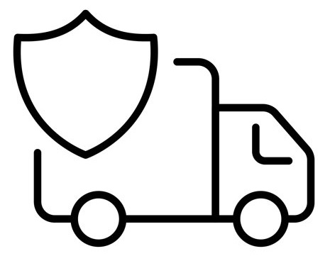
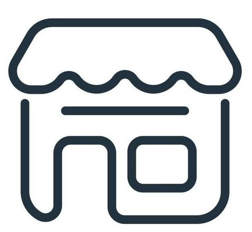

Envíos a todo el Perú
Tu pedido llega seguro a cualquier departamento.

Delivery GRATIS
Válido para todo Jepelacio y Moyobamba por compras mínimas.

Recojo en tienda física
Por la compra en tienda llevate un JepeÑeque de regalo.